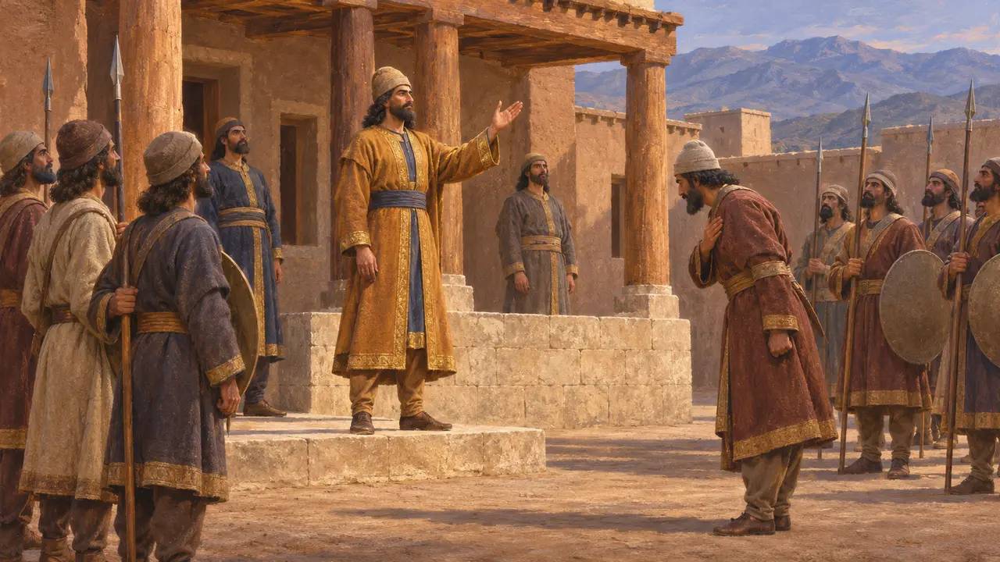
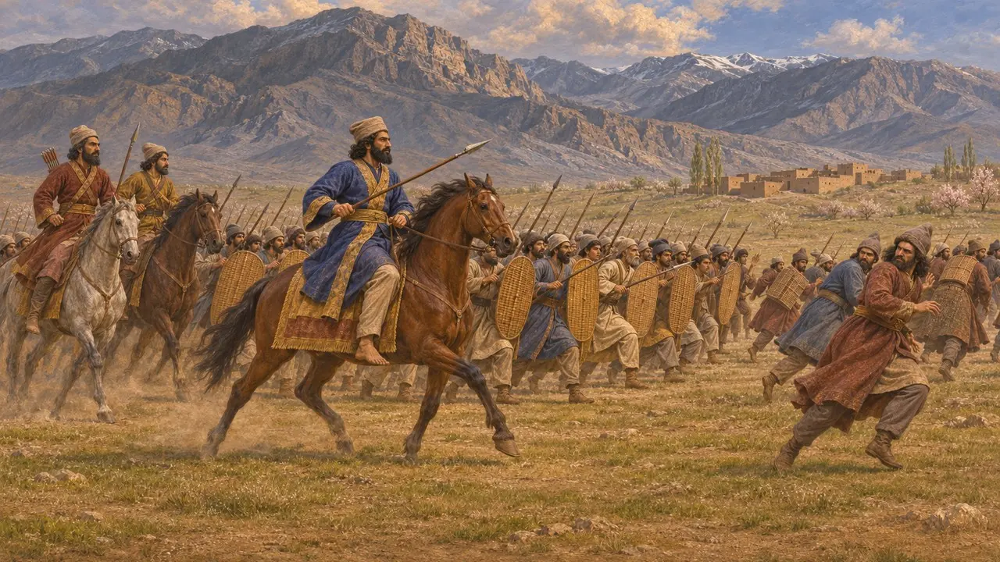
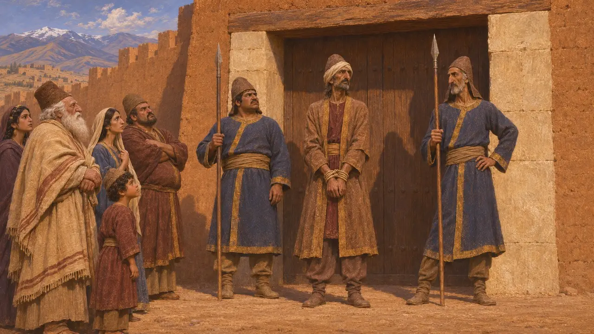
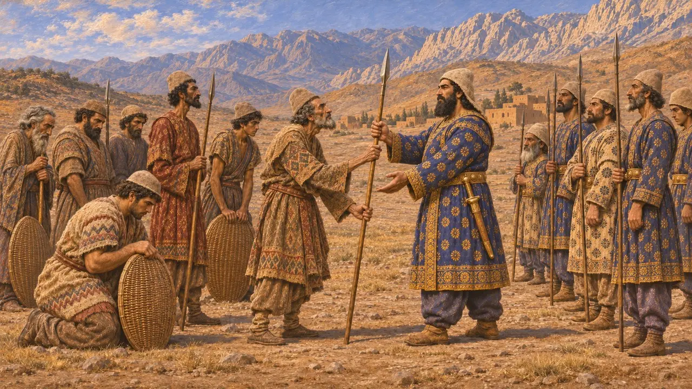
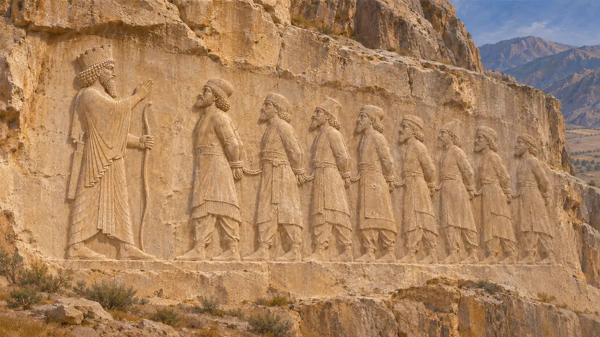

弗拉瓦尔提什（希腊语作弗拉欧尔特斯）是一名米底人，于公元前522年末起兵反抗大流士，自称克沙特里塔，是古米底王基亚克萨雷斯的后裔。在大流士夺取王位后爆发的诸多叛乱中，他的叛乱是最危险的之一，支持者远及帕提亚和希尔卡尼亚。公元前521年，大流士在昆杜鲁击败了他，并在埃克巴坦那将其处死。
游戏中： 本游戏的编年史注释称弗拉瓦尔提什为公元前522—前521年的米底叛首，兵败昆杜鲁，在埃克巴坦那被处死。此说依据贝希斯敦铭文，但有所删节，略去了他逃往拉加以及遭受残肢毁容之刑的情节。

对米底王位的宣称
见于史载贝希斯敦铭文记载，大流士在巴比伦时，一个名叫弗拉瓦尔提什的米底人在米底起事。他对民众自称是赫沙特利塔，出自乌瓦赫什特拉（基亚克萨雷斯）的家族。驻守王宫的米底军队倒向了他，他遂在米底称王。大流士将米底列入他在巴比伦期间发生叛乱的诸地之中。
DB §21, §24

米底及更远处的战争
见于史载大流士先派波斯人维达尔纳（希腊语称叙达尔涅斯）讨伐米底军队。维达尔纳在米底的马鲁什与叛军交战，随后在坎潘达地区等候国王到来。帕提亚和希尔卡尼亚倒向弗拉瓦尔提什，大流士之父维什塔斯帕不得不在那里与叛军作战。公元前521年春，大流士从巴比伦出兵，在米底的昆杜鲁击败了弗拉瓦尔提什。
DB §25, §31, §35

被俘与受刑
见于史载弗拉瓦尔提什率少数骑兵逃往拉加，大流士的军队在那里将他擒获并押回。大流士称，他割去了此人的鼻子、耳朵和舌头，剜去一只眼睛，把他绑在王宫门口示众。随后他在埃克巴坦那以穿刺之刑将其处死，并在当地要塞处决了他的主要追随者。在贝希斯敦浮雕上，弗拉瓦尔提什位列被缚的叛乱诸王之中，旁有题铭标明其名。
DB §32; DBe

希罗多德所记
古代记述希罗多德没有提到这位叛乱者的名字。他只说，曾臣服于居鲁士的米底人后来心生悔意，起兵反叛大流士，但战败后再度被征服。他笔下的弗拉欧尔特斯是另一个人，是更早一个世纪的米底国王，希罗多德称其为库阿克撒列斯之父。
Herodotus 1.130; Herodotus 1.102-103

其主张有几分真实
争夺中史家争论弗拉瓦尔提什的王位主张究竟意味着什么。“赫沙特里塔”这一名字与“卡什塔里图”相近，后者是公元前670年代亚述文献中的一位城邦领主，曾率领包括米底人在内的联盟；有人认为，希罗多德笔下早期的弗拉欧尔特斯混杂了对这类人物的记忆。学者们还争论，在居鲁士之前统一的米底王国究竟在多大程度上存在。贝希斯敦铭文是大流士本人对其对手的控词，称他们个个都是说谎者，因此弗拉瓦尔提什的出身无从查证。
P. Briant, From Cyrus to Alexander, 2002; A. Kuhrt, The Persian Empire: A Corpus of Sources, 2007
来源
- Darius I, Behistun inscription (DB §21, §24-25, §31-32, §35; DBe)
- R. Schmitt, The Bisitun Inscriptions of Darius the Great: Old Persian Text, 1991
- Herodotus 1.102-103, 1.130
- P. Briant, From Cyrus to Alexander, 2002
- A. Kuhrt, The Persian Empire: A Corpus of Sources, 2007
- R. G. Kent, Old Persian: Grammar, Texts, Lexicon, 1953